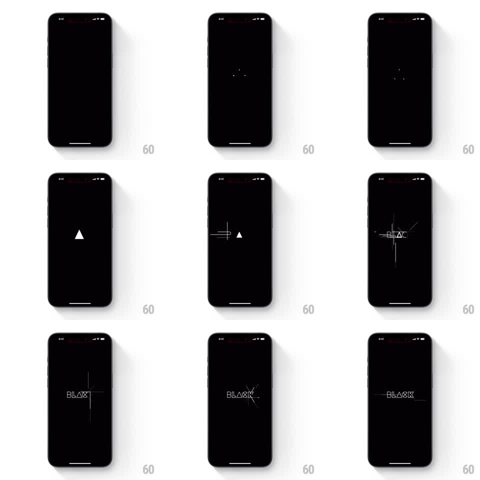

Media
Frame-by-frame

Rebuild this animation 1:1: Black's splash - on a pure black screen, a small rotating geometric loader deconstructs and its construction lines sweep outward to assemble the outlined "BLACK" wordmark in place.

Rebuild this animation 1:1: Black's splash - on a pure black screen, a small rotating geometric loader deconstructs and its construction lines sweep outward to assemble the outlined "BLACK" wordmark in place. ## Integration Integration: stack-agnostic spec - springs given as stiffness/damping, timed motions as duration + curve; map every value to your framework and animation library of choice. ## Scene Pure black screen, home indicator only. The sequence: three tiny dots at center, a single white outlined triangle, then thin construction lines (horizontal and vertical guides) sweeping through, then the wordmark "BLACK" in thin white outline type assembling among the guides, and finally resting centered with one horizontal rule through it. ## Motion spec Pattern: geometric loader morphing into a wordmark. - Three dots fade in at center (100ms, staggered 60ms) and pulse once. - The dots collapse into a small outlined triangle that rotates slowly (~1 turn per 2s) for ~800ms - the loader beat. - The triangle fractures: thin guide lines shoot out horizontally and vertically from its edges (150ms, ease-out), and the triangle's strokes travel along those guides to their letter positions. - Letter outlines of "BLACK" draw in along the guides (stroke draw, ~400ms, staggered 50ms per letter) as the spare guides fade out. - Final state: the outlined wordmark rests dead center, one horizontal line running through its middle; hold. ## Calibration - Total sequence lands around 2 to 2.5 seconds. Longer and the splash overstays. - Line weight is uniform throughout - the loader and the letters must feel cut from the same stroke. ## Reduced motion Skip the loader; fade the finished wordmark in over 300ms. ## Don't miss - The morph is geometric continuity: the triangle's lines become the letters' lines. A crossfade between loader and logo loses the trick. - Everything is white-on-black outline; nothing is ever filled.